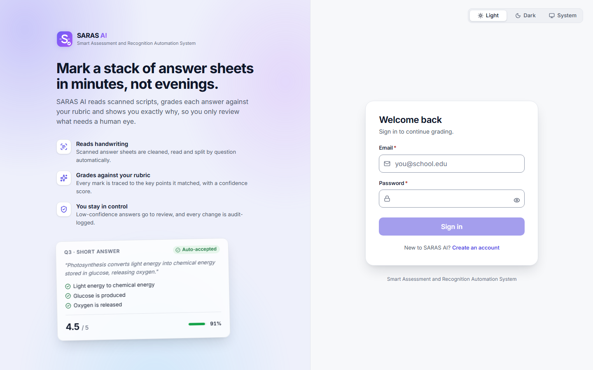
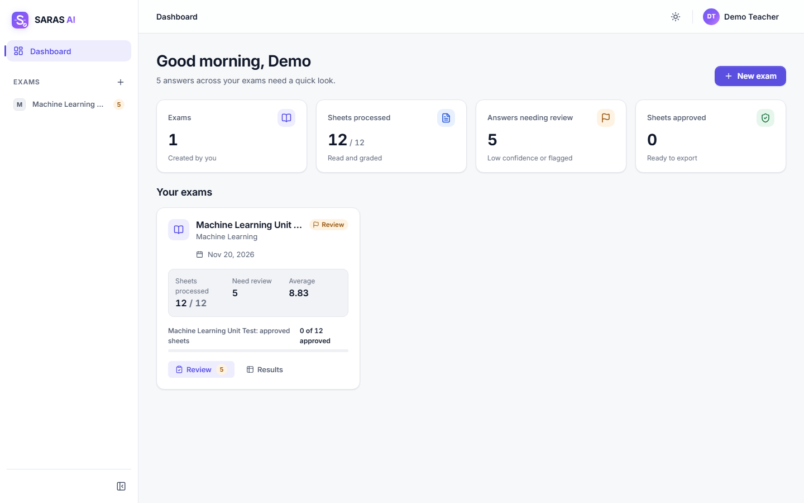
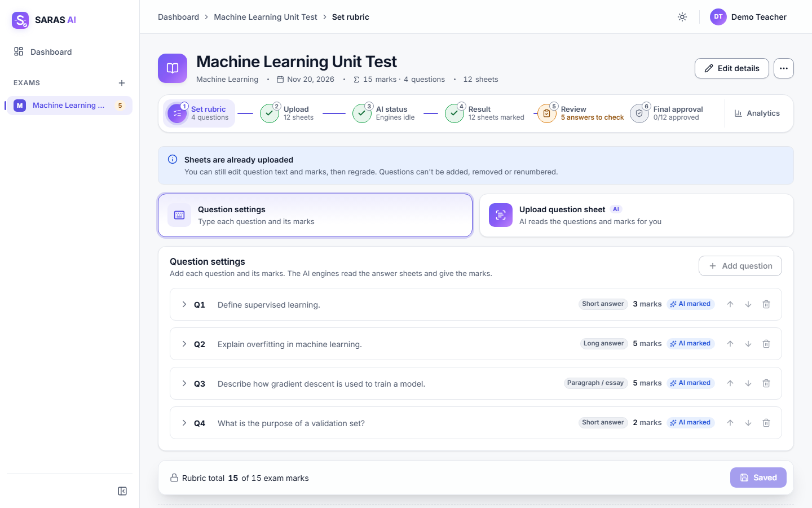
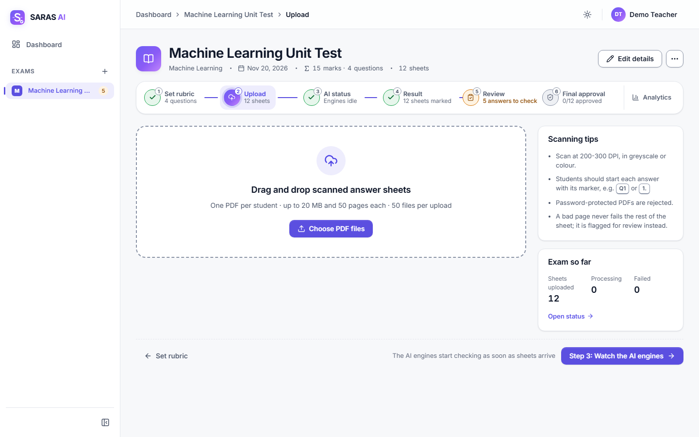
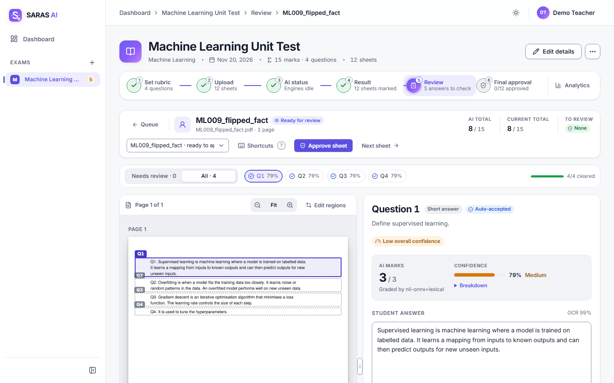
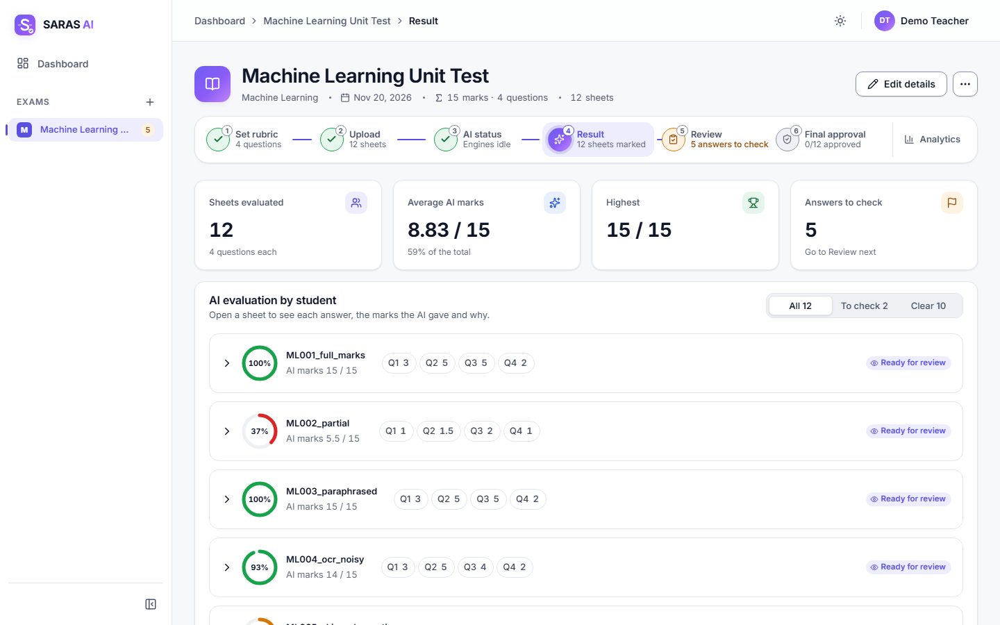
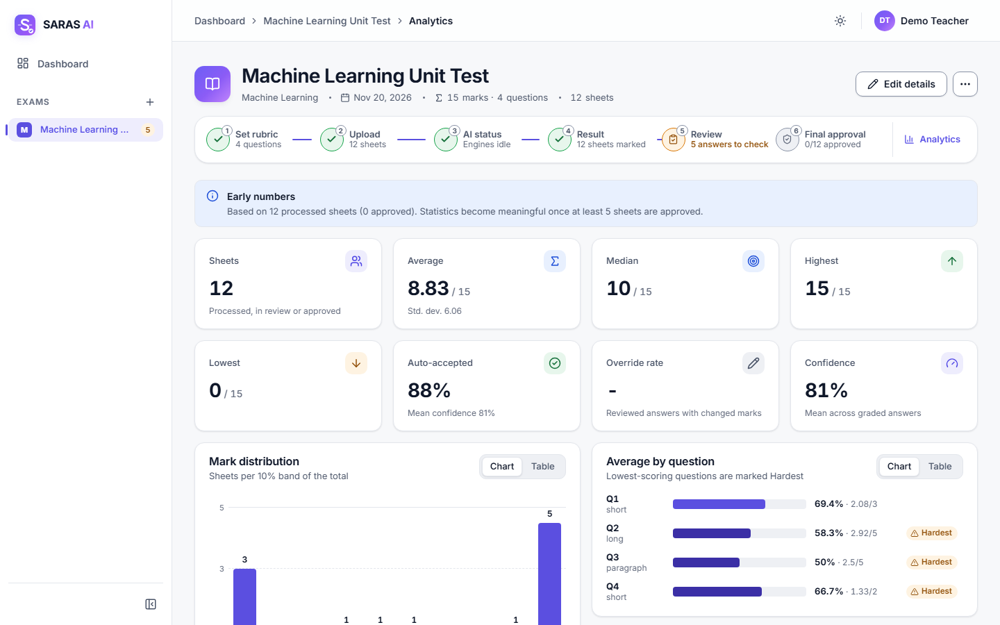
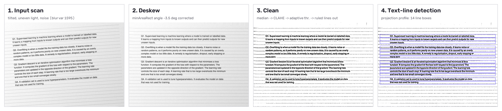

Smart Assessment and Recognition Automation System — Project Progress Report
Live demo: https://saras-ai-488c.onrender.com | Source: https://github.com/Koushik-Biswas/SARAS.AI
SARAS AI: AI-Powered Exam Answer-Sheet Evaluation and Marks Assessment System
Artificial Intelligence & Machine Learning — Educational Technology (EdTech). Sub-areas: Computer Vision (document preprocessing), Optical Character Recognition, Natural Language Processing (Natural Language Inference, semantic similarity), Large Language Models, and Full-Stack Web Development.
| Course name | [Enter course name, e.g. Machine Learning / Deep Learning] |
|---|---|
| Platform | [e.g. NPTEL / Coursera / Infosys Springboard] |
| Duration / completion date | [e.g. 12 weeks, completed DD-MM-YYYY] |
| Certificate ID / score | [Certificate number and score] |
| Relevance to project | Concepts from the course (supervised learning, NLP, model evaluation) were applied to the grading engine, confidence calibration and evaluation metrics of SARAS AI. |
Evaluating descriptive exam answers by hand is slow, inconsistent and gives students little feedback. SARAS AI automates the reading and first-pass marking of scanned answer sheets while keeping the teacher in control. A teacher defines a rubric (questions, marks and weighted key points), uploads answer-sheet PDFs, and a background pipeline renders and cleans each page with OpenCV, reads it with a multi-engine OCR cascade (PDF text layer, vision LLM, TrOCR), and splits the text into one answer per question. Each answer is graded by an ensemble of a local DeBERTa-v3 NLI cross-encoder (ONNX, CPU-only), a lexical scorer and an optional LLM marker. Every key point is reported as matched, partial, missed or contradicted with the student's sentence as evidence. A calibrated confidence score auto-accepts confident answers and routes uncertain ones to a teacher review queue. Teachers can correct, override and approve marks, and export results as CSV. The system runs on a 4 GB laptop and is deployed as a Docker web service.
Tech stack: React 18 + TypeScript (frontend); Python 3.12, FastAPI, SQLAlchemy, SQLite/PostgreSQL (backend); OpenCV, PyMuPDF, ONNX Runtime, Transformers (AI/ML); Docker, GitHub Actions, Render (deployment).
| Requirement analysis & design | Completed – problem study, system architecture, database schema and REST API design. |
|---|---|
| Backend API | Completed – FastAPI service with authentication (Argon2, JWT with refresh tokens), exams, rubrics, uploads, results and analytics endpoints. |
| Processing pipeline | Completed – PDF rendering, OpenCV preprocessing, multi-engine OCR, answer segmentation, background job worker. |
| AI grading engine | Completed – NLI cross-encoder (ONNX), lexical scorer, LLM marker (Groq / Gemini) with anonymisation and consent controls, confidence calibration. |
| Frontend | Completed – React SPA: dashboard, rubric editor, upload, live status, review workspace, region editor, results, approval, analytics, light/dark themes. |
| Testing & evaluation | Completed – pytest suite, end-to-end smoke test, CI on GitHub Actions; evaluation with QWK, κ, ECE and CER/WER on benchmark data. |
| Security hardening | Completed – rate limiting, login lock-out, upload guards, security headers, per-teacher data isolation, audit log. |
| Deployment & documentation | Completed – Docker image, Render deployment (live), README with diagrams and screenshots, MIT licence. |
| Remaining work | Persistent cloud storage for production use, larger handwritten-answer evaluation, user testing with teachers. |







